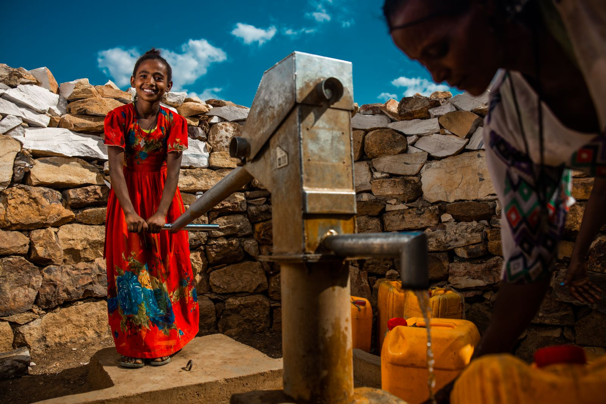

THE NEXT GENERATION CAN MAKE WAVES
You can help
bring clean water
closer.
Change doesn't always start big. Join students supporting clean water projects. Start with $5, learn where it goes, and bring a friend along.
GIVE $5 FOR CLEAN WATEREvery amount makes a difference. Donation amounts are selected on charity: water's website.

CHANGES
EVERYTHING.
01 / WHY WATER
Water should never be the thing holding someone back.
Clean water affects so much more than what comes out of a tap. It can mean more time for school, more opportunities for families, and healthier communities.
For college students, making an impact can start with one small choice. You don't need a huge budget to care about a huge issue.
LEARN WHY WATER MATTERS02 / FOLLOW THE IMPACT
Know the cause.
See the progress.
Wondering where your gift goes? charity: water shares information about the clean water projects it supports. Take a look at the work and the stories behind it.
EXPLORE THE IMPACTWHAT A SINGLE ACTION CAN START
A gift.
A conversation.
A ripple effect.
Show up in whatever way you can.
03 / YOUR MOVE
The next wave
starts with us.
Five dollars. One share. One conversation. Every movement starts somewhere.